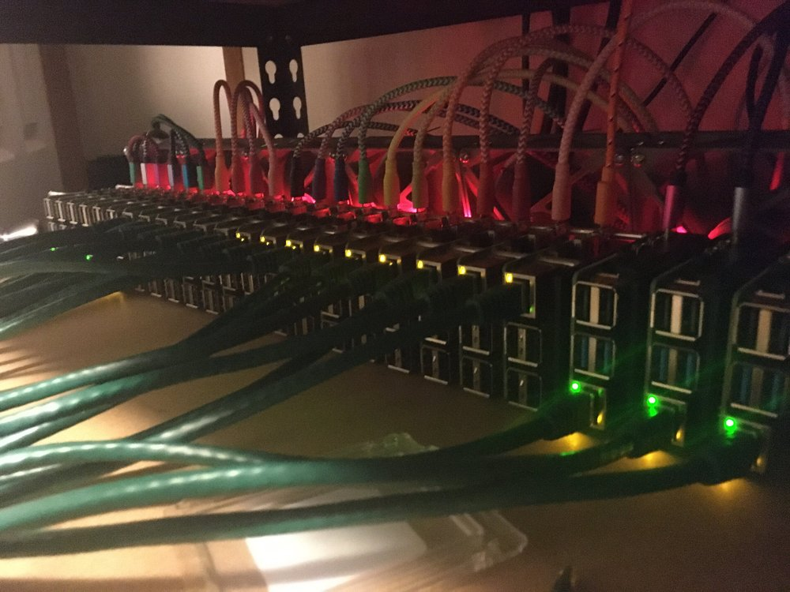

The Tower of Pi - Part 1 - Building It
Overview
This is a tower of Raspberry Pis. There’s not much more to it than that.
It’s a fairly simple build; ever since the Raspberry Pi B+, all Raspberry Pis since then have had their mounting holes in the same place. This allows Raspberry Pis to stack.
I have a lot of Pis from an old project, and a lot of new Pis to restart it. There are commercial solutions for stackable cases and rackmounting and other such ideas out there, but they were all either too complicated, too expensive, or a combination of both.
Recently, however, I discovered the existence of threaded rod. It’s an incredibly simple thing, just a length of rod that has threads. Not something that should be surprising. But it’s an incredibly simple solution for mounting a lot of Pis in a stack.
I used steel 500mm rod, because it was cheap, and just long enough to fit all my Pis (21, if you wanted to know) with a bit of room for more.
It’s also simple to assemble. Just put on a locking nut, a 16mm spacer, then a Pi with ports facing the locking nuts, then a 20mm spacer (16mm is to short, because then the contacts from the USB ports touch the enclosures for the USB ports on the next Pi). Repeat the 20mm spacer and Pi until no more can be fit on.

The three Pis closest to the camera are not actually mounted in the stack. However, with the extra rod at the end, it gives a good estimate of how many pis can actually fit on a section of 500mm threaded rod.
While assembling, the tower does feel very flimsy. However, once the nuts on the end are on and tightened down, the tower is shockingly rigid.
The only problem is that the ‘tower’ pretty much has to lay on its side. Hooking up any cables at all to the Pis on the top makes it unstable. I just ended up laying them on the GPIO side, since there’s no ports there anyways.
The other part to the Pi tower is cooling. While these Pis could run passive, I decided not to chance it and hooked up a wall of fans to a fan controller, then plugged that in to an ATX power supply. I chose quiet fans for this, so even with all of them running, it’s inaudible over the other noisy things in my office.
The easiest way to hook these up is with zip-ties, just strapping them to each other. I took a more technical approach because I wanted mine to look good, and instead put M3 screws and nuts through each of the holes on the fans, then put a zip-tie between the screws in the corner of each fan. The end result is a bit less stable, but also looks better (to me) and lets me install fan grills later if I wanted to.
Conclusion
There’s not much more to say about this really. It’s simple. Assembly, once I had the parts, was easy.
Parts List - Tower
4x 500mm L by M2.5 threaded rod
https://www.mcmaster.com/90024A215/
100x 20mm M2.5 unthreaded spacer
https://www.mcmaster.com/94669A114/
1 pack of M2.5 locking nuts
https://www.mcmaster.com/93625A102/
4x 16mm M2.5 unthreaded spacer
https://www.mcmaster.com/94669A110/
Parts List - Fan Stack
28x Screws and Nuts
Salvaged from other projects
Noctua 92mm Fan x 7
https://www.amazon.com/gp/product/B00KF7OMTI
Zip Ties
They’re out there, somewhere. Twist ties and bread ties also work